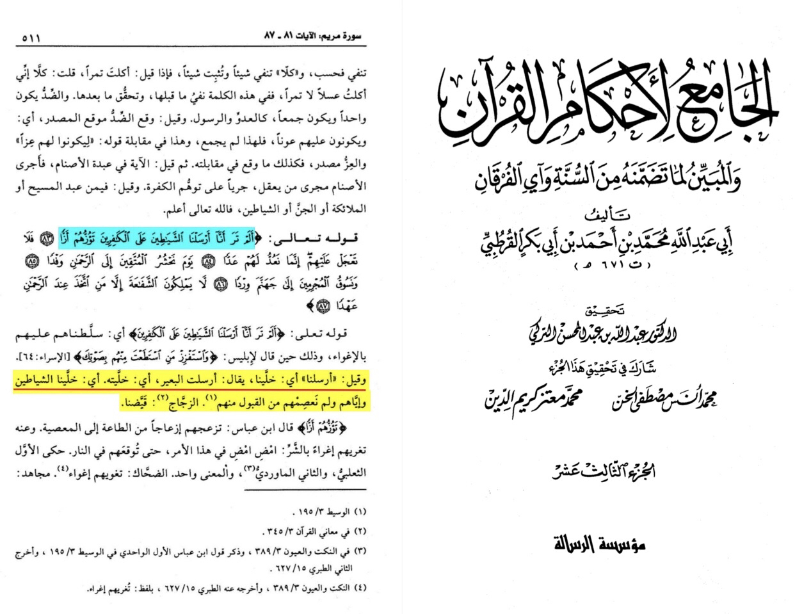

Surah maryam 83 sending demons
Home
About
Contact
Shop
Translation: “and it was said “we sent” means we left or let it is said I sent camels by meaning I let them meaning we left or let demons go” -Source: Al-Jāmī’ lī āhkām āl Qūr’ān volume 13 page number 511 interpretation 19:83 